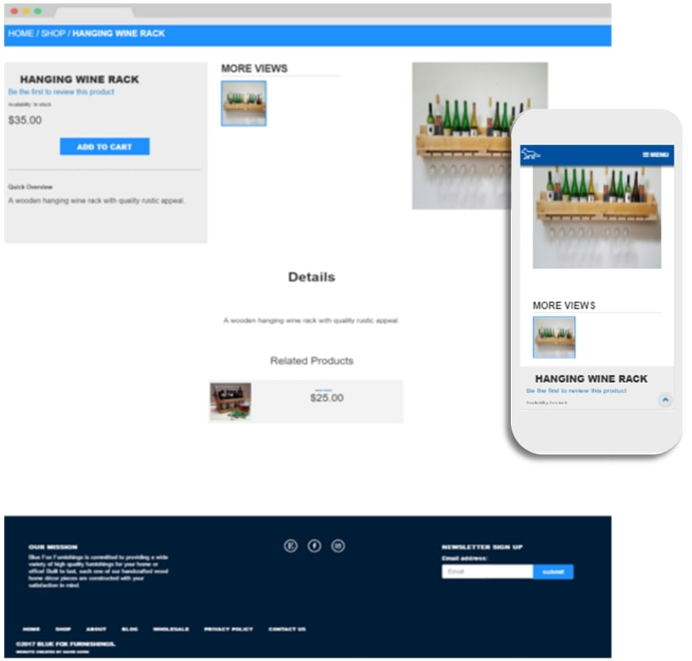

Blue Fox Furnishings is a Rustic Wood Furnishings store. They were originally selling their products through the Etsy Marketplace, but as their business expanded they wanted to grow as well. I helped them launch their first website where you can buy products directly from Blue Fox Furnishings. After weeks of planning, we figured out branding and a complete web design. I started the process with some initial sketches, then I expanded the sketches with low-fidelity wireframes. I started coding using HTML and CSS along with Bootstrap and jQuery. This design was built upon Magento for essential security and functionality.
The Blue Fox Furnishings online store is a very important aspect of the website as visitors will be visiting the store. I built a custom theme using Magento and implemented Magento into the website.
The Blue Fox Furnishings blog allows visitors of the website to gain more insight into the identity of Blue Fox Furnishings and their brand of products. I integrated WordPress with Magento which utilizes the custom theme I built for Magento.
Web design is much more than a design for a desktop, it must be designed for a wide range of devices and screen sizes. People use smartphones and tablets to access websites everyday therefore the Blue Fox Furnishings website should be as accessible as possible. The entire website incorporates a responsive design It will look good on any desktop, tablet or smartphone.
